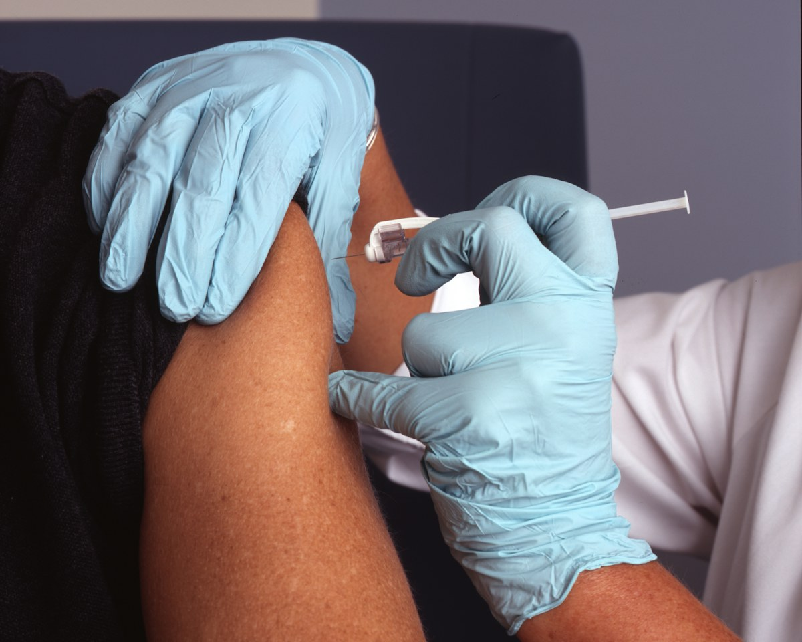

01
流行性感冒
Influenza接種流感疫苗為最有效防禦手段；保持勤洗手、注意呼吸道衛生及避免接觸患者。流感高峰期應特別留意長者、兒童及慢性病患者的需要。
接種流感疫苗勤洗手呼吸道衛生避免接觸患者
Know & Prevent
可預防疾病是指透過行為改變、健康生活習慣、定期體檢與接種疫苗，能有效減少罹患風險的疾病。以下指引有助你建立日常防線，但個人健康狀況仍應由醫護人員評估。
接種流感疫苗為最有效防禦手段；保持勤洗手、注意呼吸道衛生及避免接觸患者。流感高峰期應特別留意長者、兒童及慢性病患者的需要。
維持均衡飲食、控制糖分攝取、恆常運動，並定期進行血糖篩查以落實「及早發現、及早介入」。有家族病史或肥胖等高危因素者，應與醫生討論篩查安排。
嚴格控制血壓、血糖及血脂等生理指標；戒煙少酒、避免過胖及缺乏運動。若出現突發面部不對稱、肢體無力或言語不清，應立即求助。
保持良好個人衛生，避免飲用未經煮沸的水源及進食不潔或未熟透之食物。處理食物前後、如廁後應徹底洗手，並注意食物保存溫度。
接種肝炎疫苗，避免接觸受污染血液或體液，注意個人衛生。共用針具、紋身或穿孔器具等情況可增加傳播風險，應使用安全及消毒程序妥善的服務。
在傳染病爆發或災害發生時，加強疾病監測、提升公眾衛生意識及食物安全監管的重要性。社區層面的準備，能讓資訊更快流通，讓高風險人士更早獲得保護。
Be Prepared
公共衛生危機防範不只是政府或醫療機構的責任。當每一個社區都具備基本知識、清晰的資訊渠道與互助網絡，我們就能在傳染病爆發或災害發生時，減少混亂與傷害。

VaccinationProtect One, Protect All
疫苗能幫助身體建立免疫力，降低感染、重症及相關併發症的風險。當社區中有更多人完成接種，也能間接保護因年齡、疾病或治療而未能接種的人。